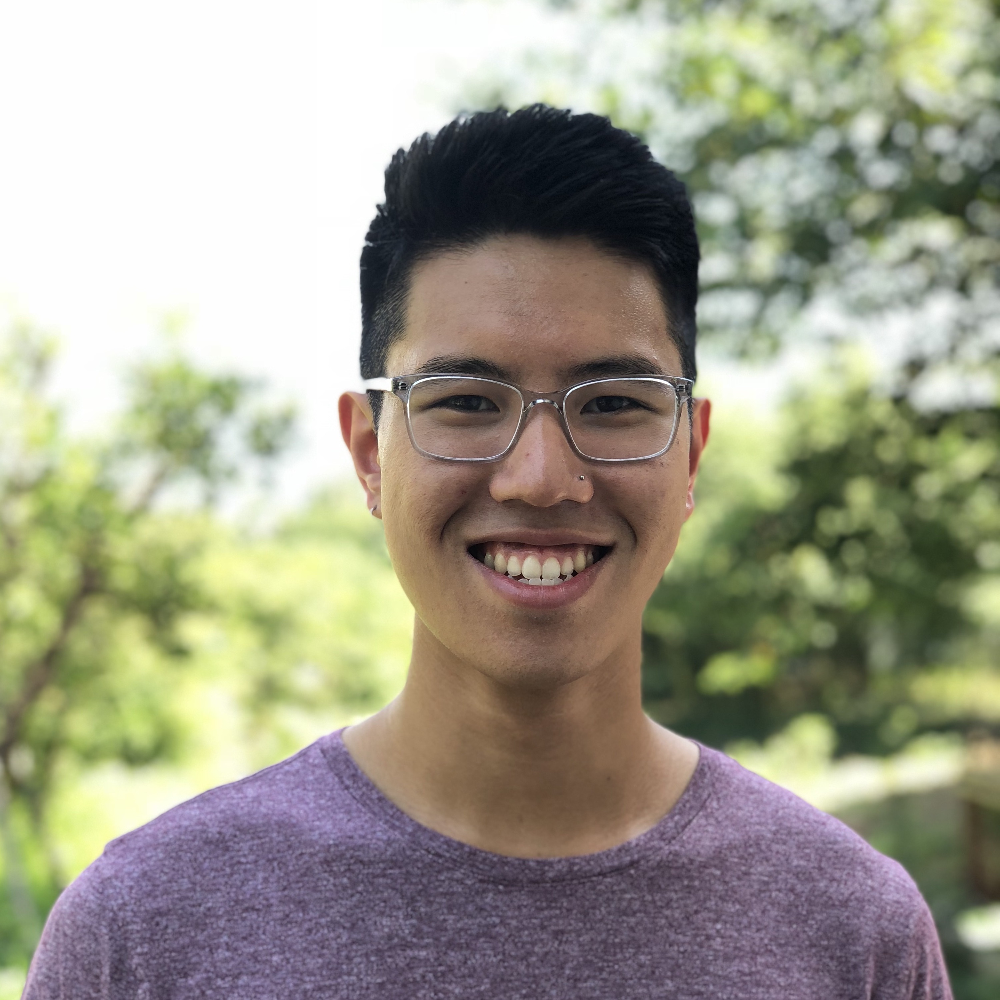

|

|
Michael J.Q. Zhang
Email: michaelzhang [at] nyu.edu
Twitter: @mjqzhang
Github: @mikejqzhang
Google Scholar: here
Pronouns: he/him
|
About
Hello! I am a fifth year Ph.D. student in Computer Science at NYU (Courant Institute). I am fortunate to be advised by Eunsol Choi. My primary research interests include machine learning and natural language processing.
I spent the first four years of my Ph.D. at UT Austin before transferring to NYU in 2024. Before that, I received my undergraduate degree in computer science at the University of Washington, where I worked with Noah A. Smith. I also spent some time interning at the
Allen Institute for AI (Summer 2024), Google Research (Summer 2022), Microsoft Research (Summer 2020), and Unbabel (Summer 2019).
Publications
-
Diverging Preferences: When do Annotators Disagree and do Models Know?
Michael J.Q. Zhang Zhilin Wang, Jena D. Hwang, Yi Dong, Olivier Delalleau, Yejin Choi, Eunsol Choi, Xiang Ren, and Valentina Pyatkin.
Presented at Pluralistic Alignment @ NeurIPS 2024 Workshop
Preprint 2024
-
Modeling Future Conversation Turns to Teach LLMs to Ask Clarifying Questions
Michael J.Q. Zhang, W. Bradley Knox, and Eunsol Choi.
Preprint 2024
-
Clarify When Necessary: Resolving Ambiguity Through Interaction with LMs
Michael J.Q. Zhang and Eunsol Choi.
Preprint 2023
-
Propagating Knowledge Updates to LMs Through Distillation
Shankar Padmanabhan, Yasumasa Onoe, Michael J.Q. Zhang, Greg Durrett, and Eunsol Choi.
NeurIPS 2023
-
Mitigating Temporal Misalignment by Discarding Outdated Facts
Michael J.Q. Zhang and Eunsol Choi.
EMNLP 2023
-
Selectively Answering Ambiguous Questions
Jeremy R. Cole, Michael J.Q. Zhang, Daniel Gillick, Julian Martin Eisenschlos, Bhuwan Dhingra, and Jacob Eisenstein.
EMNLP 2023
-
Can LMs Learn New Entities from Descriptions? Challenges in Propagating Injected Knowledge
Yasumasa Onoe, Michael J.Q. Zhang, Shankar Padmanabhan, Greg Durrett, and Eunsol Choi.
ACL 2023
[dataset / code]
-
DIFFQG: Generating Questions to Summarize Factual Changes
Jeremy R. Cole, Palak Jain, Julian Martin Eisenschlos, Michael J.Q. Zhang, Eunsol Choi, Bhuwan Dhingra.
EACL 2023
[dataset / code]
-
Rich Knowledge Sources Bring Complex Knowledge Conflicts in QA: Recalibrating Models to Reflect Conflicting Evidences
Hung-Ting Chen, Michael J.Q. Zhang, and Eunsol Choi.
EMNLP 2022
-
Entity Cloze By Date: What LMs Know About Unseen Entities
Yasumasa Onoe, Michael J.Q. Zhang, Eunsol Choi, and Greg Durrett.
NAACL 2022 Findings
[dataset / code]
-
CREAK: A Dataset for Commonsense Reasoning over Entity Knowledge
Yasumasa Onoe, Michael J.Q. Zhang, Eunsol Choi, and Greg Durrett.
NeurIPS Datasets and Benchmarks 2021
[dataset / code]
-
SituatedQA: Incorporating Extra-Linguistic Contexts into QA
Michael J.Q. Zhang, and Eunsol Choi.
EMNLP 2021 Outstanding Paper Award
[project page] [slides]
-
Document-level Neural MT: A Systematic Comparison
António V. Lopes, M. Amin Farajian, Rachel Bawden, Michael Zhang*, and André F. T. Martins.
EAMT 2020
-
Deep Weighted Averaging Classifiers
Dallas Card, Michael Zhang*, and Noah A. Smith.
ACM FAT* 2019
Personal
*It has recently come to my attention that there a more than a few Michael Zhangs out there. As of 2021, I've decided to publish under the full name Michael J.Q. Zhang.
According to my father, I was named after three other MJs. In no particular order, they are Michael Jordan, Michael Jackson, and Michael J. Fox.